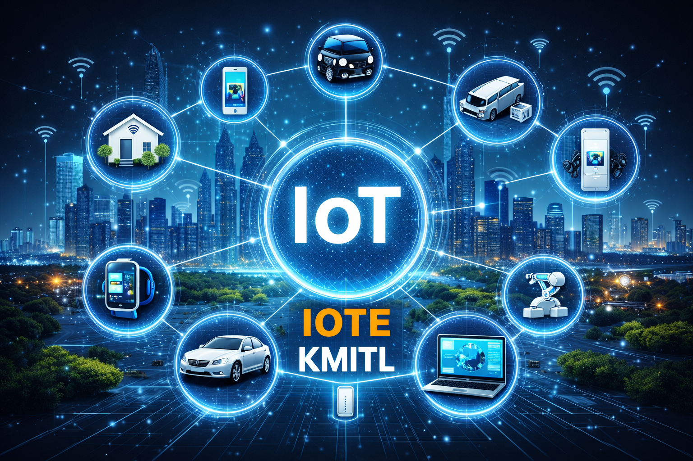

ที่ที่เทคโนโลยีอัจฉริยะมาพบกับนวัตกรรมในโลกจริง
วิศวกรรมระบบไอโอทีและสารสนเทศ (IoT & Information Engineering) เป็นสาขาที่ผสานความรู้ด้าน ระบบสมองกลฝังตัว (Embedded Systems), การพัฒนาซอฟต์แวร์, เครือข่ายคอมพิวเตอร์ และเทคโนโลยีข้อมูล เพื่อสร้างโซลูชันอัจฉริยะสำหรับอนาคต นักศึกษาจะได้เรียนรู้ผ่าน โครงงานจริง ห้องปฏิบัติการที่ทันสมัย และประสบการณ์เชิงปฏิบัติ เพื่อเตรียมความพร้อมสู่การทำงานด้านเทคโนโลยีอัจฉริยะและนวัตกรรมดิจิทัล

สร้างทักษะสำหรับเทคโนโลยีแห่งอนาคต
หลักสูตรของเราออกแบบมาเพื่อเตรียมความพร้อมให้นักศึกษาสำหรับโลกอนาคต ผ่านการเรียนรู้เชิงปฏิบัติ เทคโนโลยีสมัยใหม่ และประสบการณ์จากสถานการณ์จริงด้านระบบอัจฉริยะและนวัตกรรมดิจิทัล
การเรียนรู้เชิงปฏิบัติ
นักศึกษาจะได้ฝึกประสบการณ์ผ่านโครงงานจริง การทำงานในห้องปฏิบัติการ และงานมอบหมายเชิงปฏิบัติ ที่ช่วยพัฒนาทั้งทักษะทางเทคนิคและการแก้ปัญหา
เทคโนโลยีสมัยใหม่
เรียนรู้เทคโนโลยีสำคัญ เช่น ระบบสมองกลฝังตัว (Embedded Systems), อุปกรณ์ IoT, เครือข่ายคอมพิวเตอร์, การพัฒนาซอฟต์แวร์ และแอปพลิเคชันอัจฉริยะ
เส้นทางอาชีพในอนาคต
เตรียมความพร้อมสำหรับอาชีพต่าง ๆ เช่น IoT Engineer, Software Developer, System Designer, Data Specialist และตำแหน่งงานด้านเทคโนโลยีอื่น ๆ
แนวคิดด้านนวัตกรรม
พัฒนาความคิดสร้างสรรค์และการคิดเชิงวิเคราะห์ เพื่อออกแบบโซลูชันที่เชื่อมโยงเทคโนโลยีกับความต้องการของโลกจริงและโอกาสในอนาคต
สำรวจเทคโนโลยีเบื้องหลังระบบอัจฉริยะ
หลักสูตรของเราผสมผสานความรู้ด้าน ฮาร์ดแวร์ ซอฟต์แวร์ เครือข่าย และเทคโนโลยีข้อมูล เพื่อพัฒนาระบบอัจฉริยะสำหรับโลกที่เชื่อมต่อถึงกัน
Embedded Systems
เรียนรู้การทำงานร่วมกันระหว่างฮาร์ดแวร์และซอฟต์แวร์ เพื่อควบคุมอุปกรณ์อัจฉริยะและระบบอิเล็กทรอนิกส์ต่าง ๆ
Internet of Things
เชื่อมต่ออุปกรณ์และเซ็นเซอร์เพื่อสร้างเครือข่ายอัจฉริยะและสภาพแวดล้อมอัจฉริยะ
Software Development
ออกแบบและพัฒนาแอปพลิเคชันสมัยใหม่สำหรับเว็บ มือถือ และระบบที่เชื่อมต่อกัน
Data & AI
วิเคราะห์ข้อมูลและประยุกต์ใช้อัลกอริทึมอัจฉริยะ เพื่อพัฒนาโซลูชันเทคโนโลยีที่ชาญฉลาดยิ่งขึ้น
Networking
ทำความเข้าใจระบบการสื่อสารที่ช่วยให้อุปกรณ์และแพลตฟอร์มต่าง ๆ สามารถทำงานร่วมกันได้อย่างราบรื่น
Smart Systems
บูรณาการเทคโนโลยีหลายด้าน เพื่อสร้างระบบอัจฉริยะและระบบอัตโนมัติสำหรับการใช้งานจริงในโลกปัจจุบัน
ติดตามข่าวสารล่าสุดจาก IoTE
สำรวจข่าวประกาศล่าสุด กิจกรรมของนักศึกษา และข้อมูลสำคัญจากภาควิชา เพื่อให้คุณไม่พลาดทุกความเคลื่อนไหวและอัปเดตต่าง ๆ ของ IoTE
เรียนรู้ผ่านการสร้างนวัตกรรมจากสถานการณ์จริง
นักศึกษาจะได้รับประสบการณ์เชิงปฏิบัติผ่านการทำงานในห้องปฏิบัติการ การเรียนรู้แบบโครงงาน (Project-Based Learning) และกิจกรรมที่ใช้เทคโนโลยีเป็นตัวขับเคลื่อน ซึ่งช่วยเชื่อมโยงแนวคิดทางทฤษฎีเข้ากับการประยุกต์ใช้งานจริง
พบกับคณาจารย์ของเรา
เรียนรู้และพัฒนาศักยภาพไปพร้อมกับคณาจารย์และนักวิจัยที่มีประสบการณ์ ซึ่งพร้อมถ่ายทอดความรู้ด้านเทคโนโลยี นวัตกรรม และการแก้ปัญหาในสถานการณ์จริงให้กับนักศึกษา